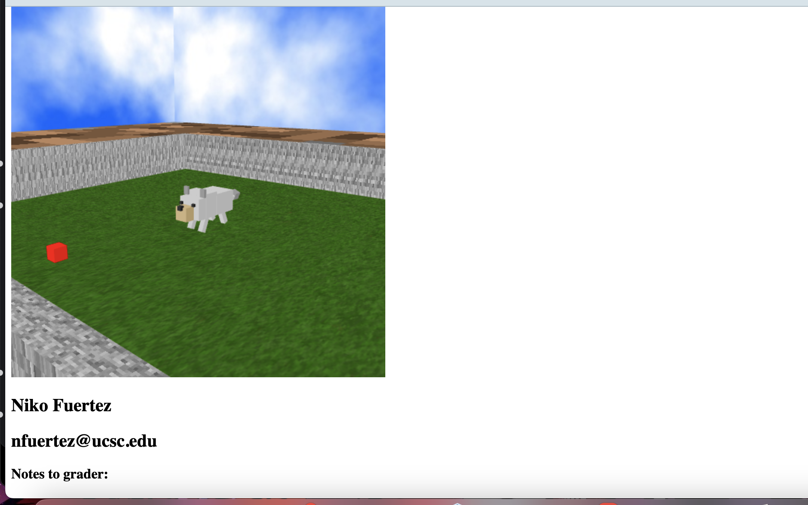

Niko Fuertez
nfuertez@ucsc.edu
Notes to grader:
W - move the camera forward; A - move the camera to the left; S - move the camera backwards; D - move the camera to the right;
Use Q (rotate left) & E (rotate right).
Use up and down arrows to go up and down.
You can use your mouse to rotate the camera
The world is a dirt field with a doggie playpen
Toggle the animation so the dog can run to the ball/stop running
Proof of working is in the ss below just in case.
Animate Me! Let's walk
Joint 1 - Legs:
Joint 2 - Base Tail:
Joint 3 - End Tail:
Camera Angle X:
Camera Angle Y:
Camera Angle Z:
